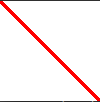

Drawing¶
Pygame Extra has simple drawing functions, most are simply redirecting to pygame itself and don’t really change in complexity
Line¶
Let’s look at the syntax of drawing a line
pe.draw.line(color, pos, w, update)
Now let’s take a closer look at the syntax
color - the line color
pos - the position of the line aka
(StartX,StartY,EndX,EndY)w - the line width
update(optional) - setting this to false will disable the automatic screen update
Rect¶
Let’s look at the syntax of drawing a rect aka a rectangle
pe.draw.rect(color, rect, w, update)
Now let’s take a closer look at the syntax
color - the rect / rect line color
rect - the rect itself aka
(StartX,StartY,SizeX,SizeY)w (no fill) - setting this to be larger than 0 will make a line rect without fill
w (with fill) - setting this to 0 will make the rect filled
update(optional) - setting this to false will disable the automatic screen update
Circle¶

Let’s look at the syntax of drawing a circle
pe.draw.circle(color, pos, size, w)
Now let’s take a closer look at the syntax
color - the circle color
pos - the center position of the circle
size - the size / radius of the circle
w (no fill) - setting this to be larger than 0 will make a line circle
w (with fill) - setting this to 0 will make a filled circle